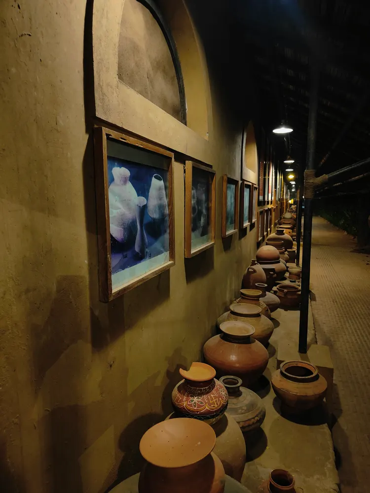

Vechaar Utensils Museum: Discovering Everyday Design in Ahmedabad

Heritage can begin with a vessel
A utensil museum changes the scale of a heritage outing. Instead of starting with a ruler or a monumental building, you can begin with an object someone held, filled or carried. Vishalla’s official account dates Vechaar’s beginning to 27 April 1981 and connects it with designer Surendra Patel and anthropologist Jyotindra Jain. Gujarat Tourism describes a collection that includes vessels and other everyday objects. That makes the museum an opportunity to think about use, not simply admire a material’s shine or a display’s visual impact.
Ask what a shape helps someone do
Choose one displayed object and look at its opening, body, base and any handle or spout. Which parts suggest pouring, lifting, storing or serving? Treat your answer as a hypothesis until a label or guide confirms the function. Compare it with a second object that appears to do a similar job. A narrow opening, a different handle or a changed proportion can give you a question worth asking. This way of looking is an editorial activity, not a technical identification of the museum’s individual pieces.
Try a family observation game
Ask each person to choose one object without touching it. First describe its visible shape without naming its use. Then suggest a possible purpose. Finally, read the label or ask a guide and see what changed in your understanding. Children can sketch an outline where note-taking is allowed; adults can join without turning the activity into a test. The important distinction is between what you observed and what you learned from the museum. Avoid encouraging anyone to handle a display to prove a guess.
Separate the museum visit from a restaurant booking
Vechaar is associated with Vishalla, but museum entry and dining should not be assumed to have identical terms. Ask the venue about current museum access, any separate charges and whether a meal reservation is relevant to the visit you want. Confirm the reporting point and current schedule directly rather than copying an older tourism listing. If you plan both experiences, leave room to look at the collection without rushing to a table. This article does not quote a ticket or meal price and does not review the restaurant’s food.
Notice the information a photograph cannot provide
A photograph can record an outline or decoration, but it may not establish an object’s age, material, origin or previous use. Save the label information separately if recording is permitted. Ask before using flash, filming a narrated sequence or bringing larger equipment. Be careful with captions that describe an entire collection as belonging to one region or era. The credited archival image here shows an earlier display; it is not evidence that a specific vessel remains in the same position today.
Use the visit to start a conversation at home
Afterward, ask a relative about a utensil they remember using and let them explain its local name and purpose. Record the conversation only with permission. Keep a family recollection distinct from a museum’s documented object history; both can be valuable without being interchangeable. If the visit leads you to buy a handmade vessel, ask the seller about the actual item and its intended use rather than assuming a visual resemblance proves suitability. Everyday heritage becomes more interesting when the object, its user and the evidence are all given space.